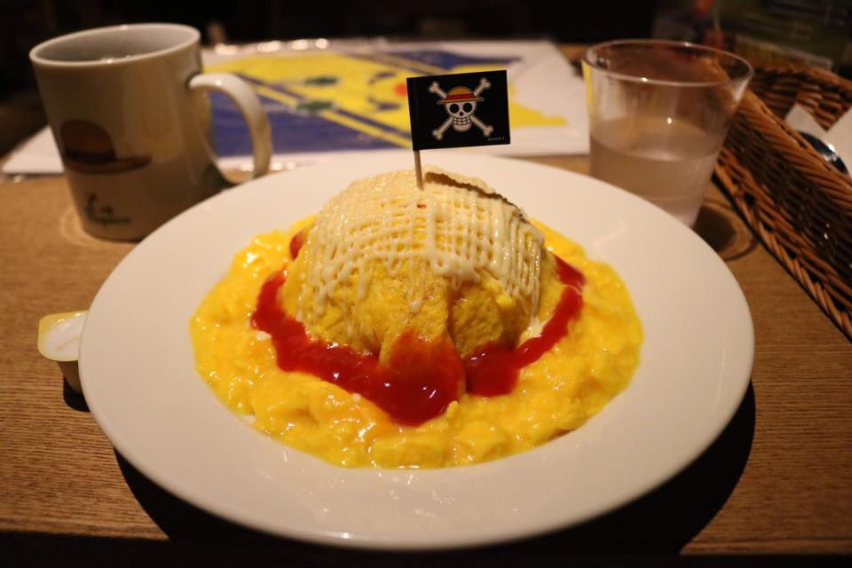
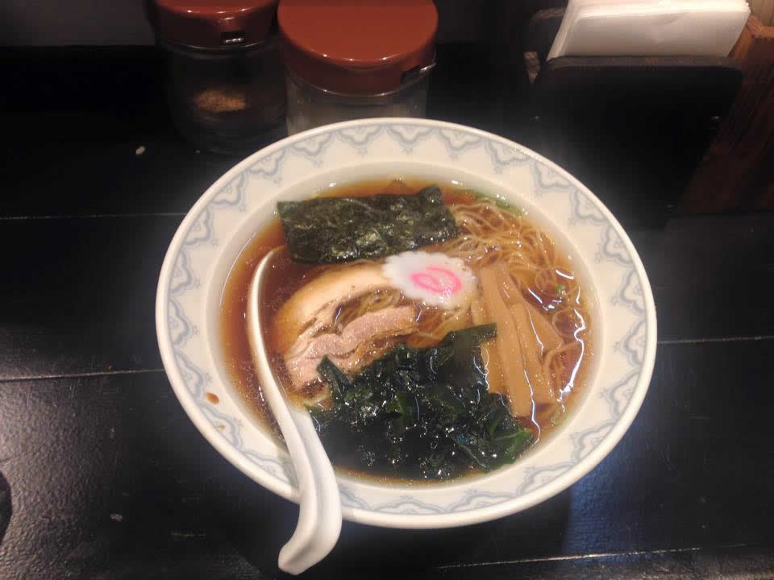
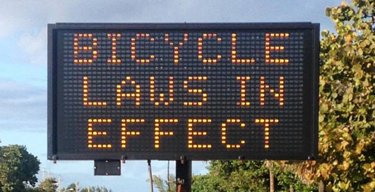

Volunteer Potluck
The potluck lunch is a volunteer lunch. Where riders bring food and drink for all. Since Tour De End of Summer is a free event. We like to provide our rider with good refreshing meal during the 2 hour cool down period. The event is free so we rely on our riders to bring the food and drink. Some foods we recommend bring include hot dogs, chips, cold cuts, cookies and really any kind of food that does not expire in the sun. Drinks we recommend are tons of water, soda, juice, and beer.
|  |  |
A person can volunteeron the day of the event as a safety and trafic stopper. You will be wearing a bright color vest and make sure everyone makes it those road crossing safely. You will also be incharge of making sure everyone is obeying.
